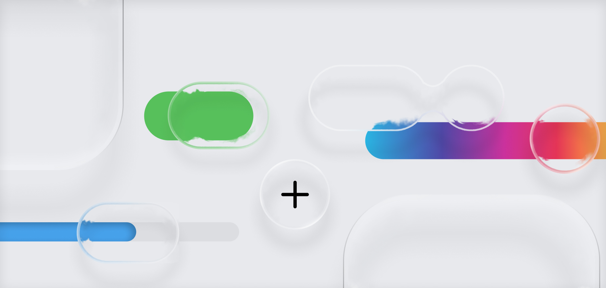
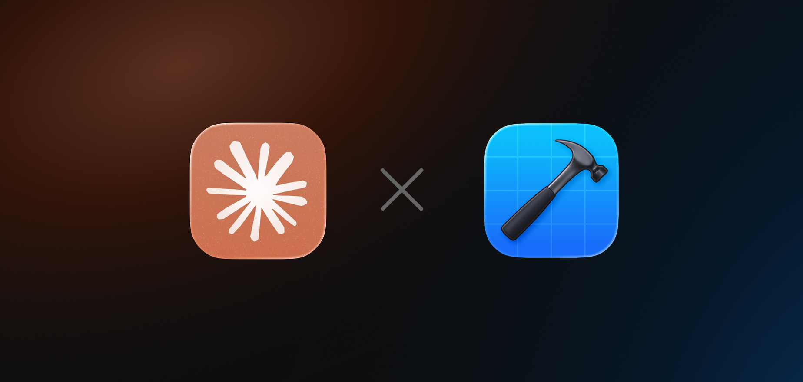

My Design & Handoff Principles
Design Ops

Design Ops
The days of Final_Final_v2_2026.fig are over. I strictly use branching for new feature work. The main file remains a pristine, single source of truth for the development team. Messy explorations, moodboards, and discarded UX flows live in a separate playground file. When a developer opens a handoff file, there should be zero guesswork.
A Figma file should be readable without the designer in the room. I believe in exhaustive annotations, clear user journey mapping, and logical screen flows. If a developer needs to schedule a 30-minute call just to understand what connects to what, the handoff has failed.
Hardcoded hex codes are a crime. Absolutely everything must reference the design system. I rely entirely on semantic design tokens to manage Light/Dark modes, and I rigorously test typography using embedded accessibility scaling to ensure layouts don't break when a user increases their system font size.

While brand expression is important, muscle memory matters more. I heavily lean into native iOS and Android components. By respecting Human Interface Guidelines and Material Design, we make the platform feel inherently familiar to the user, reducing friction and speeding up development time.
The industry loves the term "mobile-first," but I prefer "all screens matter." A design isn't finished until it works flawlessly on an iPhone SE, a massive 4k monitor, and everything in between. UI should adapt intelligently to the hardware it lives on, never feeling stretched or cramped.

Click-through Figma prototypes often lie. To ground my designs in reality, I built a custom AI-driven workflow for mobile apps. I use Claude Code to generate Xcode playgrounds, with our brand components. This allows me to build and test high-fidelity, code-backed prototypes right on my physical test device. It's the only way to genuinely test complex haptics, native physics, and custom animations before handing them off to engineering.
Egos get checked at the door. Every piece of work must be reviewed by another designer before it ships. When you stare at a flow for 40 hours, you develop blind spots. A fresh pair of eyes catches the edge cases you missed.
We never just design for the perfect scenario. A complete handoff includes the loading skeletons, the empty states, the network errors, and the edge cases. Designing how the app fails gracefully is just as important as designing how it succeeds.